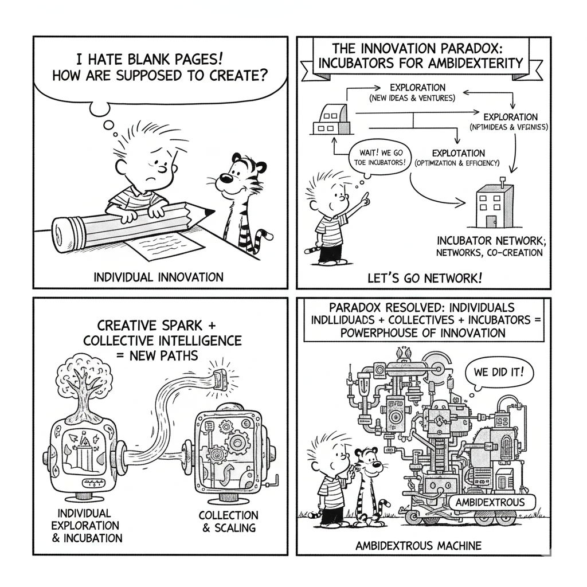
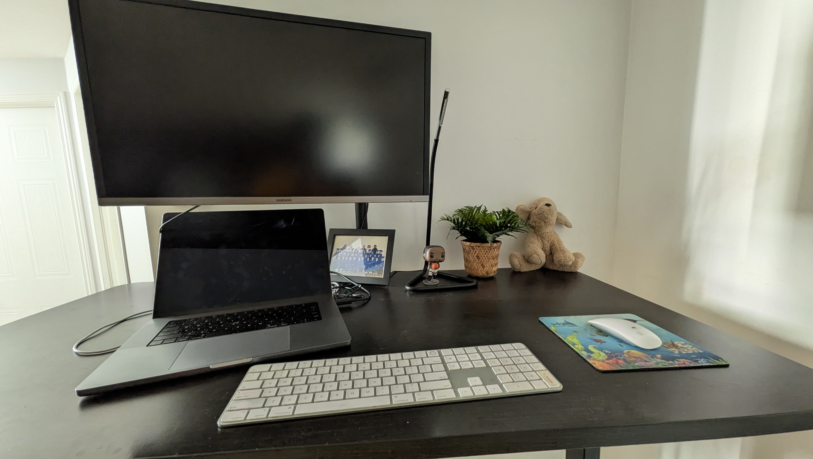
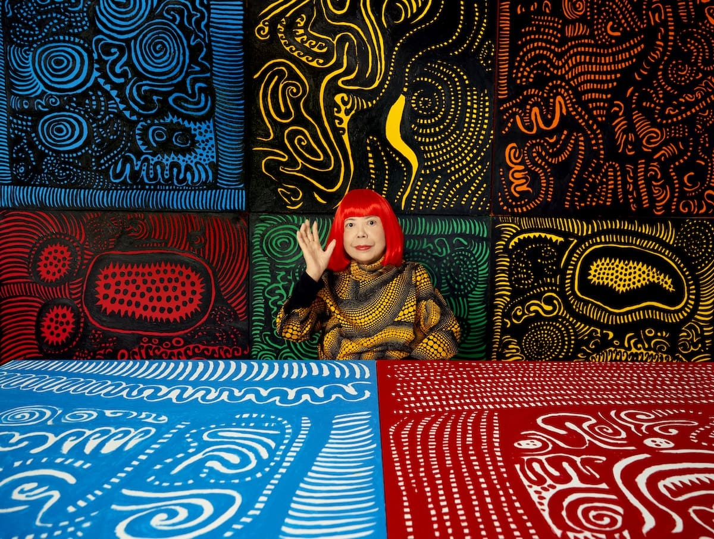

Twitter
Aujourd’hui, j’ai exploré ChatGPT dans le cadre de mon cours d’innovation, et voilà ce que j’en retiens 👇✨
L’IA amplifie la créativité : chaque idée trouve une forme, une image, une direction.
Elle rend l’innovation plus accessible, plus rapide, presque tangible.
Et surtout, elle ouvre un espace où curiosité rime avec clarté.
Ce qui m’a le plus surpris :
• La facilité avec laquelle une idée abstraite devient une image cohérente. 🎨
• La rapidité à structurer des concepts complexes en secondes. ⚡️
L’image la plus marquante ?
Une étincelle qui se transforme en réseau : l’idée qui prend vie. 🔥➡️🌐
#Innovation #Creativité #IA #ChatGPT #DesignThinking #OpenAI #FutureOfWork #Tech4Good
💬 12🔁 38❤️ 210
Twitter
Ce qui me donne le plus confiance en ma créativité, c’est exactement ce que décrit la vidéo : les petits succès répétés, ces “guided mastery moments” où l’on passe de la peur à la familiarité.
À force de tester, d’itérer, d’oser un pas supplémentaire, je réalise que tout le monde peut être créatif.
Et pour rendre les autres créatifs, Je reprends trois enseignements clés de la vidéo de David Kelley :
• Grande tolérance à l’erreur : cela casse la pression du résultat et favorise l’exploration.
• Des “baby steps” pour initier la confiance au lieu de demander directement un grand geste créatif.
• Des exemples inspirants pour montrer que la créativité est accessible.
#Créativité #Innovation #DesignThinking #GuidedMastery #Apprentissage #Inspiration #GrowthMindset
💬 12🔁 38❤️ 210
LinkedIn
1. Perdre de vue la structure dans un gros projet de données
• Erreur : Lors d’un projet chez Wise Systems, j’ai lancé une refonte du data-lake sans schéma global ni conventions de nommage. Résultat : tables multipliées, dépendances floues et maintenance difficile.
• Apprentissages : J’ai compris que la gouvernance doit être pensée dès le départ (schémas, conventions, droits, documentation et métriques de qualité). Aujourd’hui, je ne démarre plus aucun projet sans cadre clair.
2. Sous-estimer la communication et les parties prenantes
• Erreur : Lors d’une migration chez Gap Inc., j’ai trop privilégié la technique et pas assez consulté les métiers, ce qui a mené à des dashboards incohérents en production.
• Apprentissages : Impliquer tôt les utilisateurs, valider la logique métier, organiser des ateliers, prototypes et revues régulières. La communication est aussi stratégique que le code.
3. Ne pas anticiper les erreurs de production
• Erreur : Chez Big Fish Games, une permission mal testée en staging a causé une interruption d’une heure en production.
• Apprentissages : Intégrer des tests de bout en bout, des plans de reprise, du backfill automatisé et des alertes en streaming. L’excellence opérationnelle repose sur la capacité à prévoir les échecs.
4. Réflexion sur la citation de David Lynch
Pour moi, l’intuition est le « savoir agir ». En data engineering, l’analyse donne la structure, mais l’intuition oriente vers ce qui mérite attention, détecte l’anormal et guide les choix difficiles. Mes expériences – et mes échecs – ont affiné cette intuition, qui est aujourd’hui un véritable outil de décision technique.
 Twitter
Twitter
Une plateforme collaborative qui réinvente l’innovation en équilibre.

💬 12🔁 38❤️ 210
Facebook
Pour représenter l'idée de l'innovation ouverte comme réponse à la problématique de l'accès à l'eau potable et à l'assainissement dans les communautés rurales et périurbaines d'Afrique, je vais créer une image qui intègre les spécificités du contexte africain.
Voici ce que je vais inclure dans cette image :
Un paysage africain varié et reconnaissable : L'image montrera un mélange de villages ruraux et de zones périurbaines afin de situer clairement le contexte géographique africain.
Des solutions d'eau et d'assainissement innovantes et adaptées localement : Je représenterai des exemples concrets de projets mis en œuvre. Cela pourrait inclure des puits modernisés ou des systèmes de collecte d'eau de pluie, des toilettes écologiques (Ecosan), des stations de purification d'eau à petite échelle ou des points d'eau gérés par la communauté.
Des acteurs diversifiés en collaboration (innovation ouverte) :
- Membres de la communauté locale
- Experts et ONG
- Innovateurs locaux et startups
- La diaspora et des partenaires internationaux
L'intégration de la technologie et des savoirs traditionnels: L'image montrera comment les technologies modernes (panneaux solaires, capteurs simples, solutions mobiles) peuvent s'intégrer aux méthodes et connaissances ancestrales de gestion de l'eau, valorisant ainsi l'ingéniosité locale.
Un sentiment d'autonomisation et d'espoir : Les personnages exprimeront de la collaboration, de l'engagement et une joie liée à l'amélioration des conditions de vie, avec un ciel lumineux symbolisant un avenir prometteur grâce à ces initiatives collaboratives.
👍 134💬 29 commentaires↪ 9 partages
YouTube
RAID Urbain : Habitat 67 Quand j’observais Habitat 67 depuis le Vieux-Port de Montréal, je pensais qu’il s’agissait d’anciens logements abandonnés. Mais après avoir vérifié en ligne, j’ai découvert que le lieu était bel et bien habité. Je visite souvent différents endroits à Montréal, mais jamais Habitat 67 ; c’est grâce à ce cours que j’ai enfin pu l’explorer. J’y ai découvert un lieu véritablement unique, autant par la vision qui l’a inspiré que par l’expérience qu’il offre sur place.
À première vue, ces modules empilés ressemblent à des blocs de carton mal alignés ou même à un village Minecraft. Pourtant, derrière cette apparence atypique se cache une conception architecturale profondément réfléchie : les blocs interconnectés créent un véritable tissu humain.
Cela m’a rappelé les villages du Sénégal, où les concessions familiales sont reliées par des allées et des espaces qui encouragent naturellement la vie communautaire plutôt que l’individualisme.
J’ai également constaté que la vision de l’architecte, qui cherchait à imaginer les habitats du futur, contraste fortement avec l’architecture de nos immeubles actuels. Ce décalage donne à Habitat 67 une identité véritablement unique et en fait un excellent exemple pour repenser notre manière de vivre ensemble.
#architecture #innovation #carnet
▶ 12 430 vues👍 640💬 87
Instagram

Mon coin le moins natureL'image initiale (mon bureau) est l'archétype montre le parfait "coin le moins nature" : un désert austère où même la plante est une imposture en plastique.
L'anti-nature par excellence
❤ 842💬 54🔖 Enregistré 98×
Pinterest
Pour faire mieux , me métaphore serait celle du "Jardin Intérieur", avec une nuance de "micro-écosystème maîtrisé". On passe de la fausse plante à quelques vraies, de profiter de la lumiére naturelle ...
Quels bénéfices j’en espérerais ?
- Apaisement mental : un environnement plus naturel réduit le stress.
- Créativité renforcée : un espace inspirant favorise l’imaginaire, comme dans les expériences immersives d’Espace pour la vie.
- Meilleure concentration : les éléments naturels, même symboliques, aident à rester ancré et calme.
📌 Épinglé par 320 pers.↪ 18 essais dérivés
Facebook
Les 36 apprentissages sur la créativité, l’innovation et la dynamique collective
1. La créativité n’est pas innée : elle s’apprend, se travaille et se pratique.
2. Les idées émergent rarement seules : elles naissent de rencontres.
3. Les grandes innovations semblent évidentes après coup : mais elles sont rarement prévisibles.
4. Les contraintes peuvent stimuler la créativité : en forçant des solutions inédites.
5. L’innovation se situe à la frontière : entre ce que l’on sait et ce que l’on ignore.
6. Il faut souvent plusieurs mauvaises idées : pour en atteindre une bonne.
7. La créativité nécessite une “respiration créative” : des moments d’alternance entre action et pause.
8. L’innovation est un processus : pas un flash de génie.
9. Le lieu influence la créativité : certains espaces stimulent l’imagination plus que d’autres.
10. Changer de décor : ou se déplacer active la pensée divergente.
11. Les objets frontières facilitent le dialogue : entre mondes différents (ex : prototypes, dessins).
12. Un environnement sécurisant : encourage la prise de risque créative.
13. Les rituels comme les Creative Mornings : renforcent le climat créatif.
14. Une communauté d’innovation fonctionne : grâce à ses qualités et ses défauts.
15. La culture d’innovation repose sur l’identité collective : des gens qui font des choses ensemble.
16. L’innovation va souvent plus loin : lorsque les perspectives s’entrecroisent.
17. L’entreprise ambidextre : concilie exploration et exploitation simultanément.
18. Quand toute menace est la même chose : l’innovation se bloque.
19. Les réseaux faibles : (liens éloignés du cercle habituel) apportent des idées nouvelles.
20. Les idées naissent souvent “en bas” : dans l’environnement (clients, communautés d’utilisateurs).
21. L’appropriation d’idées est la clé : ressources, techniques, pouvoir de décider.
22. Le middleground fait le lien : entre le haut et le bas, gérant les paradoxes.
23. Le middleground participe à l’innovation : sans en tirer l’auteur direct.
24. Le paradoxe de l’innovation : équilibrer l’inconnu à explorer et l’existant à exploiter.
25. L’ouverture d’esprit : est une condition essentielle pour innover.
26. La curiosité : nourrit et continue la créativité.
27. L’empathie : permet de comprendre plus finement les besoins réels d’un client.
28. L’erreur : fait partie intégrante du processus créatif.
29. L’innovation implique : d’accepter l’incertitude.
30. La capacité de créer vient aussi des métaphores : qui décalent et transforment.
31. La société de la connaissance : évolue vers une société de la création.
32. L’entrepreneuriat : offre une manière plus agile et souple de faire émerger des idées innovantes.
33. Il existe une différence : entre disruption tactique (améliorer) et disruption stratégique (réinventer).
34. Le premier réflexe des organisations : est de reproduire le même modèle plutôt que de changer.
35. Le big-bang de l’innovation : consiste à ajouter du sens : ne plus faire l’abandon complexe, mais réévaluer l’importance de la simplicité.
36. J’ai également beaucoup appris : grâce aux personnalités inspirantes, aux communautés d’innovation, aux projets créatifs, aux anecdotes marquantes et aux activités en classe inversées.

👍 134💬 29 commentaires↪ 9 partages
Facebook
Bonjour à toutes et à tous @tous 👋
Aujourd’hui, j’aimerais partager avec vous une petite réflexion sur la manière dont une décroissance possible peut coexister avec une dynamique d’innovation. Dans le contexte actuel, où notre idée du progrès évolue, je trouve essentiel de repenser ce que “faire mieux” signifie vraiment.
Et si réinventer le progrès passait par plus de sobriété, plus d’ingéniosité collective et une innovation recentrée sur l’essentiel ? 🌱✨
👍 134💬 29 commentaires↪ 9 partages
TikTok
Je me reconnais pleinement dans le rôle du sorcier : celui qui mélange, transforme et réinvente, faisant émerger du nouveau à partir de l’existant.
Si je devais donner une voix à ma manière de contribuer à l’innovation, ce serait une voix de baryton : profonde, posée, présente sans chercher l’éclat du premier rôle.
Je ne vise pas forcément le devant de la scène, mais j’aime intervenir au moment clé, là où une combinaison inattendue ou une nouvelle perspective peut réorienter un projet.
Mon apport à l’innovation réside dans cette capacité à façonner de nouvelles formes au cœur de la complexité, comme un sorcier qui révèle une vision encore inexplorée.
❤ 2.3K💬 120↻ 310 partages